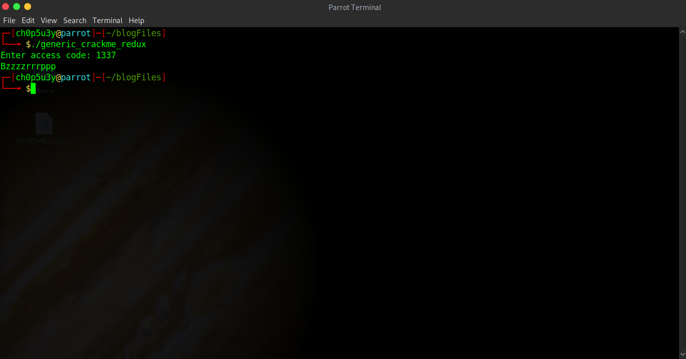
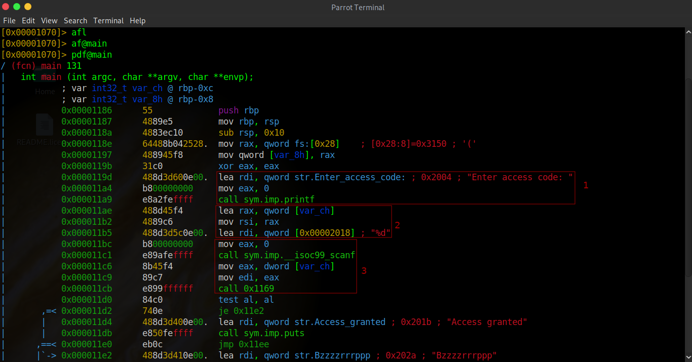
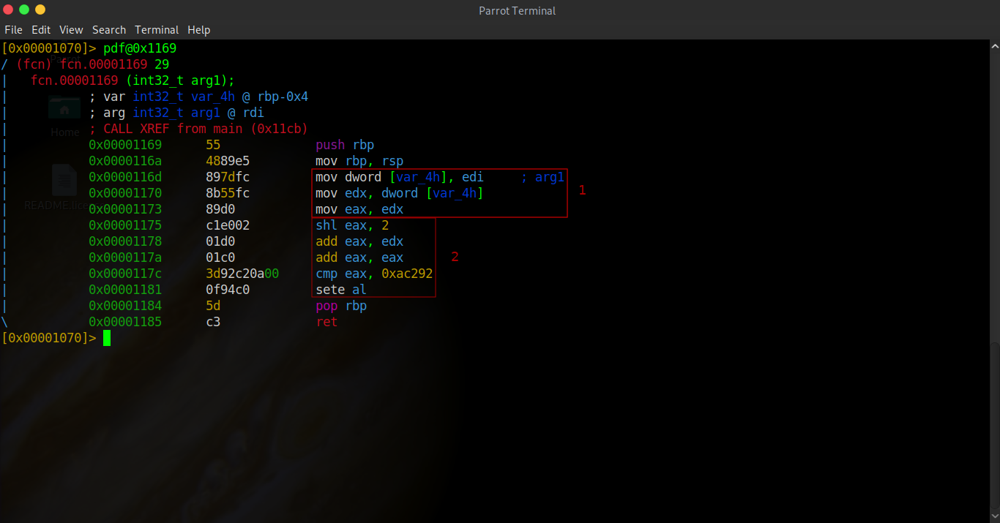
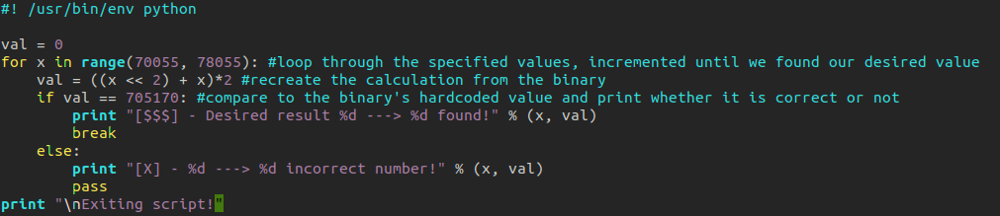
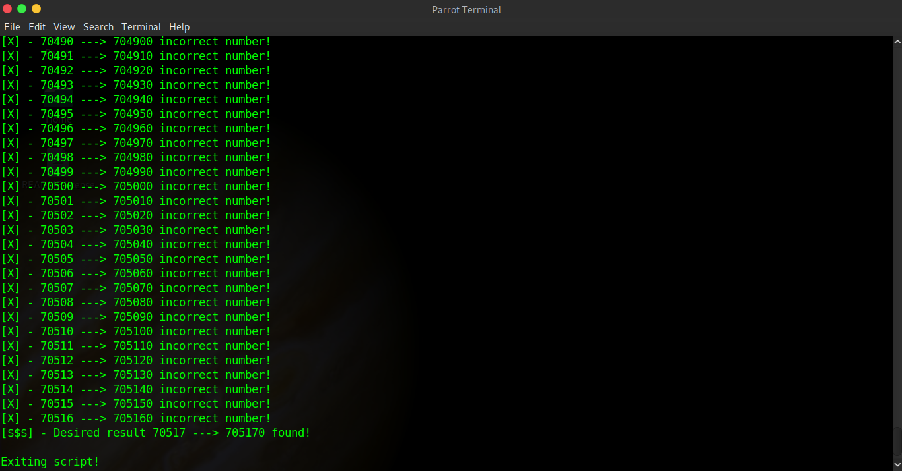

genericCrackmeRedux - RedpwnCTF 2019
This first chunk of code merely prints the prompt message for the user's input.
This second chunk loads variable ch into rax, moves rax into rsi and then loads the format string '%d' into rdi. This format string tells us the program is expecting a decimal number.
This last chunk of code calls the C scanf function to take the user's input which is then stored into variable ch, ch is then moved into eax, eax is moved into edi and finally a strange function '0x1169' is called.
In these first few instructions I've highlighted, our input (which if you remember was stored in edi) is passed into variable 4h, which is then passed into edx and finally passed into eax.
These next instructions are extremely interesting! The first instruction shl shifts a values bits to the left by whatever number is specified, here it is shifting the bits of the value in eax to the left by 2. The next instruction simply adds the value of edx (which holds our original input) to the new value of eax. Another add instruction is used to add the value of eax to itself multiplying the value by 2. The cmp instruction compares the value of eax to 0xac292 (705170 in decimal). And the final instruction sete will set al to either 1 or 0 depending on the result of the previous cmp instruction.
Mon 12 Aug. 2019, 17:00 BST - Fri 16 Aug. 2019, 17:00 BST
Summary: A simple reverse engineering challenge requiring basic knowledge of assembly along with basic python scripting skills.
So first off we are presented with a typical ELF file which when ran via our terminal gives us the following output.
As you can see whenever I feed the program incorrect input it prints "Bzzzzrrrppp" to the terminal and ceases execution. Let's have a look at the assembly code using Radare2!
Once we've loaded the binary into r2 we have to run a few commands. First we analyze the current list of functions (afl), then we analyze the main function (af@main) and finally we print the disassembled function (pdf@main). Now we need to analyze the assembly code, most of it we can ignore but I've highlighted the important parts.
So now we know how the program is taking user input, what kind of input the program expects from the user and we also know where this input is being passed to! Next we need to take a closer look at function 0x1169 to see what it's doing with our input. So in r2 we analyze this function (af@0x1169), then we print the function's disassembled code (pdf@0x1169) and open sesame!
So this function's code is a lot more interesting than what we found in main. Let's break down what's going on here!
Great! So now we understand what this function is doing with our input and we know the value it is checking our input against. Now with 0xac292 we could try to reverse the calucation to get it's original value! First we divide 0xac292 by 2, as the last instruction multiplied eax by 2, and we get 352585! Next we... Oh... Next we would subtract the value in edx but as we already know this is our input and without knowing the correct input needed we therefore can't reverse this calculation. So what do we do? We're going to write a script to bruteforce the input we need! Below you can see this script complete with comments or you can copy paste the code from here.
Let's see if our script works...
Works a charm! ( ͡° ͜ʖ ͡°) Seems all we really had to do was get rid of the 0 on the end of the hard coded value... ヽ(ｏ`皿′ｏ)ﾉ
Now lets feed this input into the program and see what happens.
And it worked! Only thing left to do is submit the code in the format flag{70517} for points.